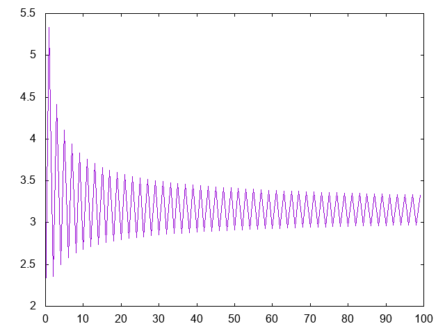

Cálculo de pi mediante la fórmula de Bauer
El pasado 10 de marzo se publicó en Twitter un mensaje con una [fórmula de Bauer}(https://en.wikipedia.org/wiki/Gustav_Conrad_Bauer#Footnotes_in_the_history_of_mathematics) para el cálculo de pi

Los primeros valores son
λ> 2/1 2.0 λ> 2/(1 - 5*(1/2)^3) 5.333333333333333 λ> 2/(1 - 5*(1/2)^3 + 9*((1*3)/(2*4))^3) 2.354022988505747 λ> 2/(1 - 5*(1/2)^3 + 9*((1*3)/(2*4))^3 - 13*((1*3*5)/(2*4*6))^3) 4.416172506738545
Definir las funciones
aproximacionPi :: Int -> Double grafica :: [Int] -> IO ()
tales que
- (aproximacionPi n) es la n-ésima aproximación de pi con la fórmula de Bauer. Por ejemplo,
aproximacionPi 0 == 2.0
aproximacionPi 1 == 5.333333333333333
aproximacionPi 2 == 2.354022988505747
aproximacionPi 3 == 4.416172506738545
aproximacionPi (10^2) == 2.974407762733626
aproximacionPi (10^2+1) == 3.3277148010019233
aproximacionPi (10^3) == 3.0865454975585744
aproximacionPi (10^3+1) == 3.1986099487445463
aproximacionPi (10^4) == 3.1239682112773868
aproximacionPi (10^4+1) == 3.1594161911246594
aproximacionPi (10^5) == 3.135997665507836
aproximacionPi (10^5+1) == 3.147207613460776
pi == 3.141592653589793
- (grafica xs) dibuja la gráfica de las k-ésimas aproximaciones de pi para k en xs. Por ejemplo, (grafica [0..99]) dibuja 
Soluciones
import Graphics.Gnuplot.Simple (Attribute (Key, PNG), plotList) aproximacionPi :: Int -> Double aproximacionPi n = aproximacionesPi !! n aproximacionesPi :: [Double] aproximacionesPi = map (2/) (scanl1 (+) (zipWith (*) [fromIntegral ((-1)^n*(4*n+1))| n <- [0..]] (1 : scanl1 (*) [(x/y)^3 | (x,y) <- zip [1,3..] [2,4..]]))) -- Gráfica -- ======= grafica :: [Int] -> IO () grafica xs = plotList [ Key Nothing -- , PNG "Calculo_de_pi_mediante_la_formula_de_Bauer_1.png" ] [(k,aproximacionPi k) | k <- xs]